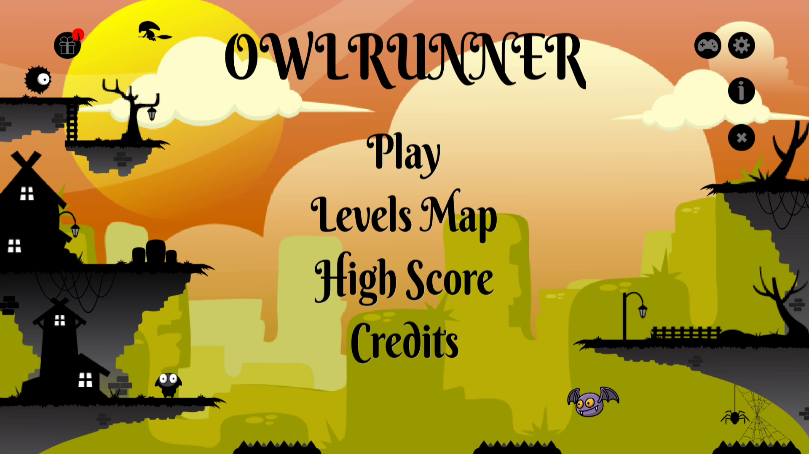

Posté le : 27/11/2025
Avancement du développement – Bêta en préparation
Le développement de la version bêta d'Owl Runner avance à grands pas !
Ces dernières semaines, Llinivers a concentré son travail sur :
L’amélioration du système de stockage des ressources, essentiel pour permettre l’achat de power-ups;
L’ajout de nouveaux power-ups venant enrichir les possibilités de gameplay;
Les finitions graphiques, pour affiner l’identité visuelle du jeu avant la sortie de la bêta.
L’objectif est clair : proposer une bêta solide, fun et agréable à prendre en main, afin de préparer au mieux la future version finale.